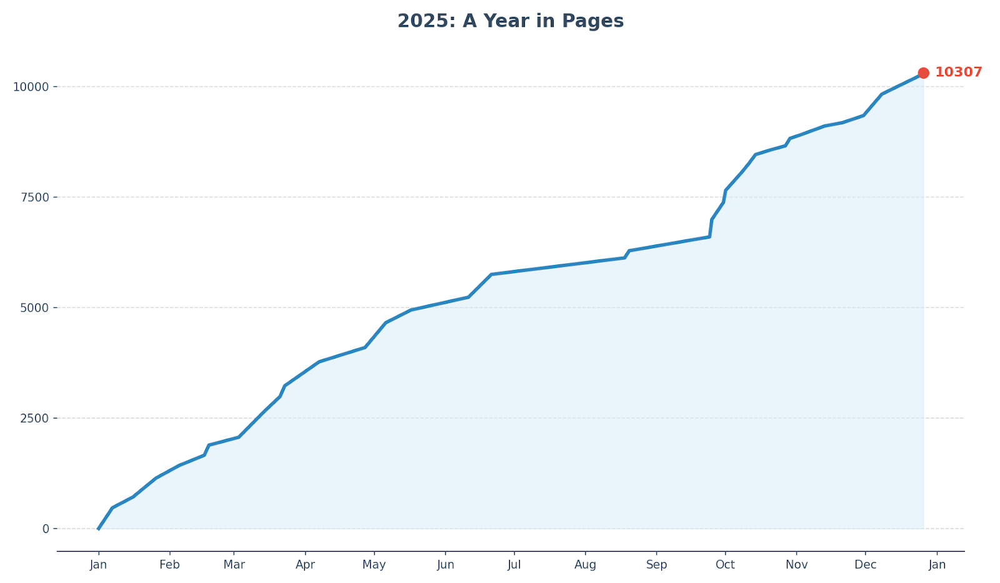
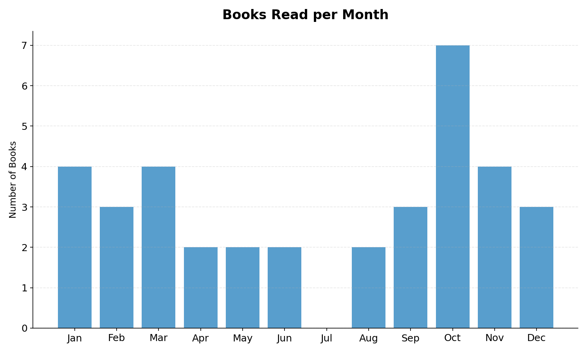

My 2025 in books
The quiet of the holiday season offers the perfect setting to take stock of the last twelve months of reading. On January 1st, Stephen King’s The Dead Zone kept me company during the early hours of 2025, and now, 10,307 pages later, Bruno Giussani’s pro-European manifesto Moins d'Amérique dans nos vies (Less America in our lives) closes out a year in which I’ve learned a great deal.

I’m closing 2025 with 36 books read, maintaining an average of 3 books per month. After a start to the year dedicated almost entirely to fiction, my interest shifted toward non-fiction. Between August and November, I devoted a lot of time to the Ukraine question, the US-European relationship, and the mechanisms of logic. I then wrapped up the year ranging from historical sociology (The Crowd by Le Bon is as timely in its dynamics as it is dated in its prejudices) to the inner workings of NATO with Stoltenberg and Apps.

A few scattered observations:
- With 10 titles read this year, I’ve brought my lifetime total of Stephen King books read to 26. Worthy of note are The Shining, a masterpiece I finally got around to reading (and watching the movie), and The Running Man, which I devoured in one go. The Dark Tower saga is struggling to take off: after the first three, I’m finding it hard to start Wizard and Glass.
- Only the Dead by Bear Braumoeller is a critique of the declining violence thesis (see Steven Pinker). Braumoeller shows how no significant decrease in the intensity or lethality of wars has emerged since the end of the Napoleonic era.
- The Myth of the Rational Voter by Bryan Caplan deals with systematic distortions in voting behavior and questions both the rational voter assumption and the more lenient interpretations of direct democracy. Caplan identifies four recurring biases (anti-market, anti-foreign, make-work, and pessimistic) and introduces the concept of rational irrationality: when the individual cost of a political error is zero, it becomes rational to maintain erroneous but psychologically gratifying beliefs, with relevant aggregate effects on public policies. I liked it.
- God Emperor of Dune by Frank Herbert, the fourth novel in the Dune Saga, was as interesting as it was complex. It deserves a reread.
- Christian Realism and Political Problems by Reinhold Niebuhr was a highly topical read that helped me shape my ideas on pacifism.
- The Strategy of Denial by Elbridge A. Colby, a Republican political scientist, is extremely rigorous and helped me interpret certain decisions and statements from the American administration (the withdrawal from Afghanistan, the longed-for disengagement in Ukraine, Trump’s broadsides against the EU).
- Few readings have made me feel such a sense of despair as Night by Elie Wiesel (Nobel Peace Prize winner and Auschwitz survivor).
Complete list of readings:
| Date | Title | Author | Pages | Notes |
|---|---|---|---|---|
| Jan 07 | The Dead Zone | Stephen King | 469 | Great start to the new year! |
| Jan 16 | The Running Man | Stephen King | 245 | Good, read in one breath |
| Jan 21 | Dolores Claiborne | Stephen King | 215 | Cute, especially the ending |
| Jan 26 | The Storytelling Animal | Jonathan Gottschall | 212 | Nothing earth-shattering |
| Feb 05 | On Writing | Stephen King | 284 | Interesting |
| Feb 16 | Rage | Stephen King | 233 | Less crazy than expected |
| Feb 18 | The Experience Machine | Andy Clark | 228 | To be re-read |
| Mar 03 | The Colorado Kid | Stephen King | 179 | Interesting |
| Mar 14 | God Emperor of Dune | Frank Herbert | 578 | To be re-read to understand better |
| Mar 21 | Only the Dead | Bear Braumoeller | 344 | Super interesting |
| Mar 23 | Il lato oscuro dei social network | Serena Mazzini | 240 | Moralistic |
| Apr 07 | The Waste Lands (Dark Tower III) | Stephen King | 544 | Finally getting somewhere (in the second half) |
| Apr 27 | Mickey7 | Edward Ashton | 324 | Movie was better |
| May 06 | The Shining | Stephen King | 560 | Truly beautiful |
| May 17 | Diversamente | Immanuel Casto | 288 | Fun |
| Jun 11 | La Svizzera è un paese neutrale (e felice) | Maurizio Binaghi | 289 | Positively surprised |
| Jun 21 | Doctor Sleep | Stephen King | 516 | Beautiful! |
| Aug 18 | Gerald's Game | Stephen King | 374 | Boring until the last 20%, then phenomenal. Well written, but too much introspection |
| Aug 20 | Russia: The Empire That Cannot Die | Anna Zafesova | 161 | Linear, interesting |
| Sep 24 | Ignorance: A Global History | Peter Burke | 314 | Lots of dates, but great to have on the shelf |
| Sep 25 | Rationality | Steven Pinker | 395 | I am a bit bored by this type of book (read too many). Interesting, but nothing new |
| Sep 30 | The Strategy of Denial | Elbridge A. Colby | 384 | Rigorous |
| Oct 01 | Mathematica | David Bessis | 274 | Making math accessible, using imagination and creativity |
| Oct 08 | Bad Arguments | Robert Arp | 409 | Good handbook of logical fallacies |
| Oct 11 | Christian Realism and Political Problems | Reinhold Niebuhr | 191 | Interesting essays of great relevance |
| Oct 14 | L’Ucraina in 100 date | Giulia Lami | 209 | Precise |
| Oct 21 | Night | Elie Wiesel | 112 | Heartbreaking |
| Oct 27 | Dawn | Elie Wiesel | 85 | Last 10 pages are stupendous |
| Oct 29 | The Crowd: A Study of the Popular Mind | Gustave Le Bon | 169 | Timely, interesting |
| Nov 02 | L’impunità dei coloni | Ronen Bergman | 69 | Well-done reportage |
| Nov 13 | The Myth of the Rational Voter | Bryan Caplan | 209 | Very interesting |
| Nov 21 | Allegro ma non troppo | Carlo Cipolla | 80 | Funny pamphlet, 5 laws of human stupidity |
| Nov 30 | Quarant’anni sulle strade della criminalità in Ticino | Giorgio Galusero | 157 | Nice to recognize the places! |
| Dec 08 | Deterring Armageddon | Peter Apps | 486 | History of NATO |
| Dec 25 | Nella stanza dei bottoni | Jens Stoltenberg | 431 | Interesting and full of behind-the-scenes |
| Dec 26 | Moins d’Amérique dans nos vies | Bruno Giussani | 50 | European federalist manifesto |
My personal top-5 includes, in random order:
- Caplan, The myth of the rational voter
- Niebuhr, Christian Realism and Political Problems
- King, Shining
- Braumoeller, Only the Dead
- Arp, Bad Arguments